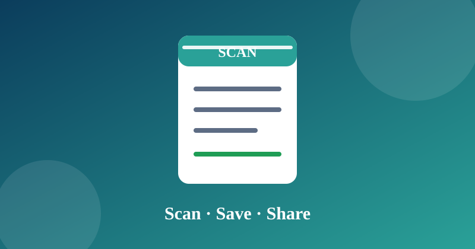

5 Best Free Document Scanner Apps for Android (2026)

A phone camera plus a good scanner app replaces a flatbed scanner for most everyday jobs — receipts, ID cards, signed forms, handwritten notes. We tested the most popular free scanner apps on a mid-range Android phone for one question: which one gives you a clean, straight, readable PDF without ads, watermarks or a subscription ambush?
What we tested
- Scan quality — automatic edge detection, perspective correction and readable text
- Free-tier limits — watermarks, page limits, OCR and export restrictions
- Ads & privacy — how intrusive the ads are, and where your scans are processed
- Everyday use — multi-page PDFs, sharing, and saving to cloud storage
1. Adobe Scan — best overall scanner
Adobe Scan finds page edges fast, straightens and cleans up the image automatically, and its text recognition (OCR) is the most accurate of the free options we tried. The free tier covers unlimited scanning and PDF sharing; the paid plan mainly adds extra cloud storage and premium editing. If you scan documents regularly, start here.
2. Google Drive — best if you already have it
Most Android phones already have Google Drive, and its built-in camera scan does the core job well: auto-crop, clean-up and straight-to-Drive PDF saving, with no extra app and no ads. It is basic — no batch filters or advanced OCR — but for the occasional receipt or form, it is the fastest option because there is nothing to install.
3. SwiftScan — best clean free experience
SwiftScan (formerly Scanbot) is the quiet achiever: fast auto-capture, good edge detection, multi-page PDFs and cloud upload, with a noticeably calmer free tier than most rivals. Some features — like automatic text recognition and smart file naming — sit behind the paid plan, but the free scanning itself stays clean and usable.
4. CamScanner — most features, with a catch
CamScanner is the most feature-packed scanner on this list: batch scanning, OCR, fax, ID-card mode and cloud sync. But it is also the most ad-heavy free tier, and it carries real history — in 2019 security researchers found a malicious module in the app, it was pulled from the Play Store, and it later returned cleaned up. It works well today, but privacy-conscious users should weigh that record and check the permissions it asks for.
5. Genius Scan — best simple, honest scanner
Genius Scan keeps things simple: point, capture, save as PDF or JPG, share. No account needed, no cloud forced on you, and the free version does the basics without nagging. It lacks the smart OCR and cloud polish of Adobe Scan, but for quick, private scans it is the most straightforward pick here.
A note on Microsoft Lens
Microsoft Lens used to be a strong free scanner, but Microsoft retired it in late 2025 — the app is no longer on the Play Store, and existing installs have stopped receiving updates. If an old guide still recommends it, skip it and pick one of the five above instead.
Quick comparison
| Scanner | Ads | OCR in free tier | Best for |
|---|---|---|---|
| Adobe Scan | Minimal | Yes | Regular scanning, best quality |
| Google Drive | None | Basic | Quick scans, nothing to install |
| SwiftScan | Minimal | Paid | Clean, calm free experience |
| CamScanner | Heavy | Limited | Most features, if you accept ads |
| Genius Scan | Minimal | No | Simple, private, no account |
Note: prices and free-tier features change often — always check the Play Store listing before installing. We never link to cracked or modded apps.